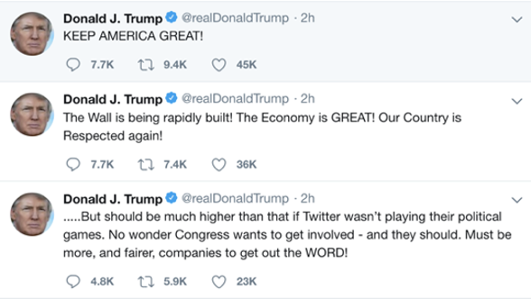
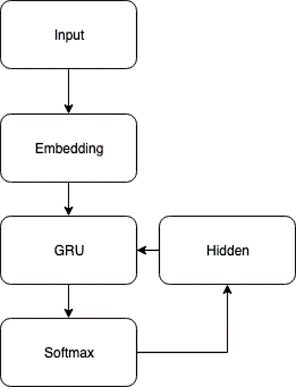
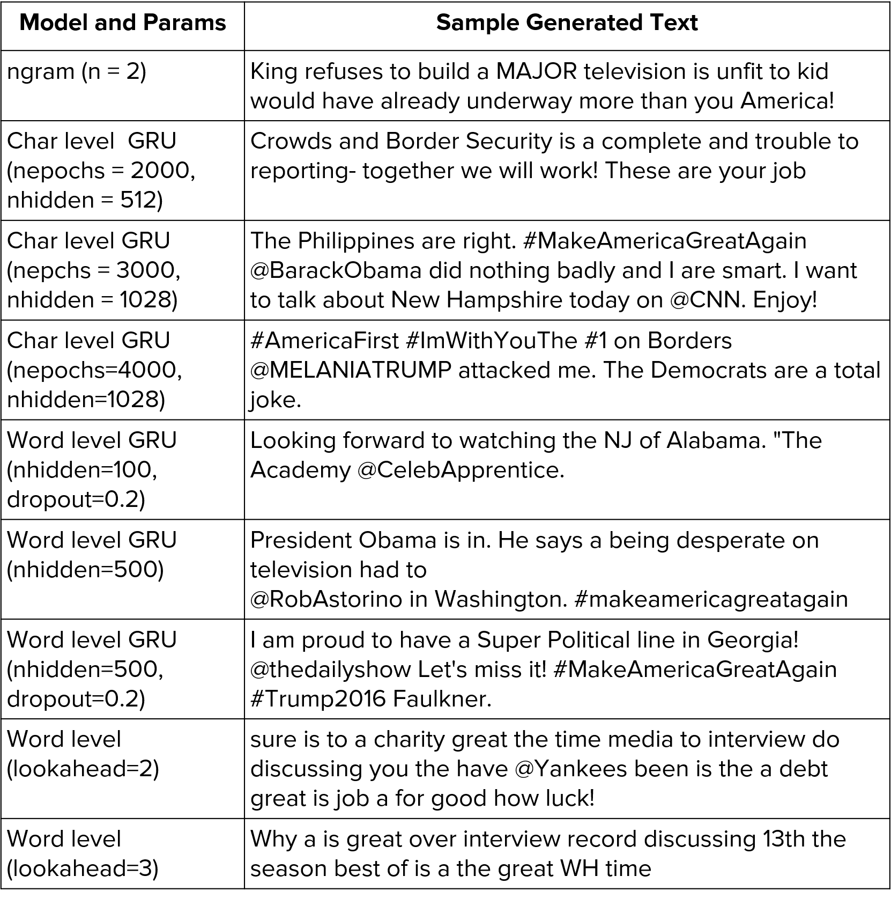
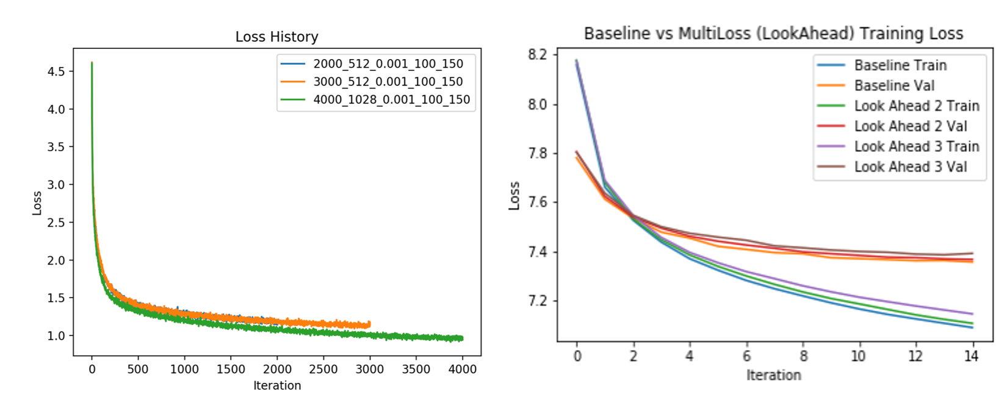

TrumpRNN: Look-Ahead, Multi-Loss Generative Language Models
Bryan Baek, Nigel CampbellSpring 2019 CS 7643 Deep Learning: Class Project
Georgia Tech
Abstract
This project employed various language models to capture a style of a well-known figure: Donald Trump. Trump's tweets from 2013 to 2019 were trained via n-gram, character-level RNN architecture with GRU, and word-level RNN architecture with GRU. Next, word-level RNN's loss function was modified to lookahead mechanism and better retain contextual information and word-level dependencies. Finally, generated outputs from these models were qualitatively evaluated. Qualitatively, character level models are best at capturing character level dependencies in Trump Tweets, and word level models are better at maintaining long term word level dependencies in terms of maintaining coherent tweets.Teaser figure
A figure that conveys the main idea behind the project or the main application being addressed. (This one is from AlexNet.)Introduction / Background / Motivation
Recurrent neural networks have been used successfully across a variety of applications ranging from image captioning, machine translation and text generation. In the realm of probabilistic classification, language modelling describes the problem of computing the probability of a sequence of character or word tokens given a discrete vocabulary. This problem has applications across machine translation, speech recognition, summarization and dialogue systems.Before deep learning, text generation was done using probabilistic Markov Chain Monte Carlo and bag of words model in closed vocabulary settings. However, some of the limits with respect involve maintaining contextual information for long sequences of generated text as well as keeping word dependencies such that generated text remains coherent.
There have been attempts to use deep learning to generate similar text output. Karparthy used a RNN structure to mimic corpus like Shakespeare text, Wikipedia article, a C code, and even a LaTex file [1]. However, while they “look” like the original text, they do not sound like the author of the original document. In “Applying Artistic Style Transfer to Natural Language,” [2] Edirisooriya and Tenney embed IDs and apply RNNs of gated recurrent unit (GRU) to identify authors of a given text based on style. They try to separate the loss function in terms of content and style. However, the outcome of their experiments showed limited results, and this required parallel sets of text data. In Feb 2019, researchers from OpenAI trained a large-scale unsupervised language model with 1.5 billion parameters trained on 40GB of Internet text. that creates coherent paragraphs of text based on a human-input text. [3] While the generated text was remarkably relevant to the input text in terms of content, it lacks similarity in style.

Figure A: Basic architecture of GRU cell
This is interesting for the following reasons. First, it not only reveals how a machine learn to speak but also provokes thinking about how we humans grasp the concept of language and speak. Second, from an user’s point of view, this presents an interesting perspective of how the user sounds. Finally, it metaphysically touches on the concept of "immortality". Currently, there exists voice question-and-answer system like Alexa or Watson that can reasonably carry out a conversation. However, they lack in an specific tone that usually defines a person. By combining human-level intellect with a specific person's tone, we could reasonably mimic the person, and this idea would be like "deep-copying" someone's mental features.
Approach
Our dataset consists of tweets from Donald Trump’s official Twitter account @realDonaldTrump from 2013 to 2019, excluding retweets. Combined, the dataset is about 3MB.

For the initial qualitative evaluation, we first built initial closed vocabulary language models using n-grams, char-level GRU-based RNN models, and word-level GRU-based RNN models. N-Gram is a very simple language model that approximates probability of a word given previous N words. N-gram, thus, relies on the Markov assumption, and ignores distant history in a sequence of words. Here, we used n = (2,3,4).
Exhibit A: Examples of @realDonaldTrump’s tweets
Thus, we then trained a char-level and word-level GRU-based RNNs using PyTorch Framework. Adding recurrence in the model provides additional contextual information that allows picking up on a larger pattern in the training data. We attempt to model the probability distribution of the next character or word in the sequence given a sequence of previous characters or words, letting us generate the new text one character or word at a time. For both RNN models, we first encode the texts into feature representations (e.g. number of ASCII characters for char level), and run them through two layers of GRU. Finally, decode them into a vector output via a single densely connected output layer with softmax activation function (Figure B). We focused on tuning the following hyperparameters: number of epochs, hidden size of GRU, learning rate, length of training chunks, and batch size.

From our initial set of models, we aimed to improve the quality of word-level dependencies between long running sequences of generated texts. We anticipated given the small dataset and rather simple nature of the architecture, generated output may not be qualitatively good. From the initial trial runs, we saw that trained models mostly generated gibberish, and we had to cherry pick snip bits of sensible texts.
Figure A: Sample of Overall RNN Architecture for Char and Word Level Model
Therefore, we modified the loss function for the word-level model. The loss is computed between multiple sets of sources and “lookahead” targets as opposed to single discrete sets of sources and targets. We hoped this would help retain contextual information and word-level dependencies while remaining computationally tractable. With this modified loss function, at training we look at multiple sources within a given sequence and define multiple targets so that long running dependencies are learned. We looked at the source code provided by Karparthy in his blog, and made modifications to use the PyTorch framework, and added custom loss function as described. Finally, for all of the models, we captured the loss history over the epochs, and generated a synthetic text based on random initial seeds of characters or words.
Experiments and Results

For all of the experiments, we had to measure the success based on the loss history and qualitative evaluation of the generated tweets. On the trained models, we generated the tweets with string primer. With the basic n-grams, with n=2, the generated tweets were semi-coherent, while with n=4, the generated tweet were almost identical to the actual tweets. For RNN models, we had to cherry pick parts of the output that were interesting; this part was also observed and discussed in [1] and [2]. As shown by Figure 2, all of the models are converging, indicating the model is learning something. However, the char level models took about 700 iterations to converge, while word level models took about 10 iterations. This is as expected because word vector is bigger than the character vector.
Figure B: Generated Text Output

Figure C: Loss History of Char-Level, Word-Level, and modified Loss Function Word-Level RNN
Conclusions
Trump’s style is particularly unique because of his usage of hashtags, capitalizations, and punctuations. We noticed that there was a tradeoff between style and content similarity: char level model would better capture the style because it captures the granularity like the punctuation mark, but the word level model is better at capturing the diction and word choices. While the models are definitely learning, it is still limited. As shown by related works in the area, a much larger text dataset in the order of GBs will improve the performance.Team Member Identification
| Name | Description of Work |
|---|---|
| Bryan Baek | Gathered the data, implemented the char level RNN with GRU models, trained and monitored the optimization addressing any issues such as overfitting, tuned hyper-parameters, wrote the report |
| Nigel Campbell | Implemented the word level RNN with GRU models and n-gram models, implemented new loss function, designed and implemented attentional mechanism for approach. |
References
[1] A. Karpathy, "The Unreasonable Effectiveness of Recurrent Neural Networks," 21 May 2015. [Online]. Available: http://karpathy.github.io/2015/05/21/rnn-effectiveness/. [Accessed 28 April 2019].[2] T. Edirisooriya and M. Tenney, "Applying Artistic Style Transfer to Natural Language," 2018. [Online]. Available: http://web.stanford.edu/class/cs224s/reports/Thaminda_Edirisooriya.pdf. [Accessed 28 April 2019].
[3] A. Radford, J. Wu, R. Child, D. Luan, D. Amodei and I. Sutskever, "Language Models are Unsupervised Multitask Learners," 2019.
[4] T. Shen, T. Lei, R. Barzilay and T. Jaakkola, "Style Transfer from Non-Parallel Text by Cross-Alignment," CoRR, vol. abs/1705.09655, 2017.